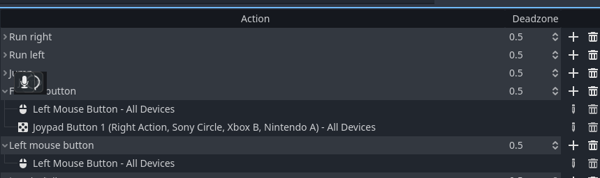
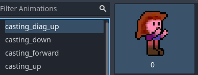
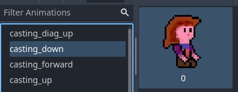
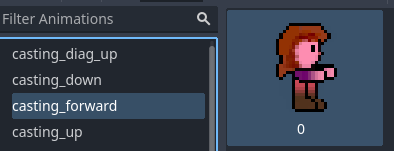
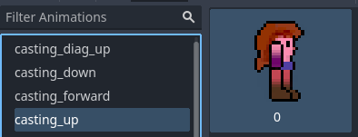
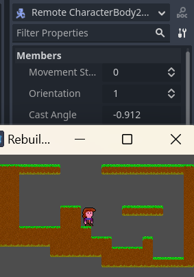

Day 3 - Casting Sprites
Today we're going to add Zelia's casting sprites to her script.
Want to start from here?
Clone or download the result of day 2 from github
Learning goals
- Determine the angle between the Zelia sprite and the mouse cursor
- Determine the angle of the
L-stick - Using
rad_to_degto determing the correct casting sprite for aiming - Code refactor to tidy up code and make it more maintainable
The steps for today
- Assign casting buttons
- Fix the casting sprites for Zelia (Technical debt 1)
- Determine cast direction via mouse cursor position and L-stick axis
- Rearrange the code in
_physics_processa little - Draw the correct casting sprites based on cast direction
- Extract some functions for less messy code (Technical debt 2)
Assign casting buttons
After day 3 Zelia will cast fireballs in all directions:
- when holding gamepad button B, you can aim with the L-stick
- when holding the left mouse button, you can aim with the mouse cursor.
- Go to
Project > Project Settings - Go to
Input Maps - Choose
Add New Action - Set the name to
Fireball button - Assign
Left Mouse ButtontoFireball button - Assign
Joypad Button 1toFireball button
Now to determine which of either is pressed we need to assign one to another name.
- Choose
Add New Action - Set the name to
Left mouse button - Assign
Left Mouse Buttonto your new action namedLeft mouse button

Fix the casting sprites for Zelia
On day 1 we added one SpriteFrames entry for all casting images.
We should have made an entry per image to cover all her angles of casting:
- Go to
FileSystem > res:// > player > player.tscn - Go to
Scene > Player > AnimatedSprite2D - On the bottom pane choose
casting - Rename it to
casting_down(click on it a second time) - Select the image casting forward
- Press
Ctrl-Cto copy it - Add a new
Animationnamedcasting_forward - Click on the preview window
- Select it and press
Ctrl-Vto paste the image of Zelia casting forward - Repeat this process until you have 4 entries:
casting_up,casting_diag_up,casting_forwardandcasting_down - Remove the images not casting down from the
casting_downanimation:
   
Note: the image called casting_down will also be used for casting down diagonally.
(Her arms look really silly when pointing directly down)
Determine cast direction via mouse cursor position and L-stick axis
First let's write some code to see if we can set the angle of casting when one of the Fireball buttons is pressed.
Later on we'll pick the correct sprite, based on her angle of casting
Go to FileSystem > player > player.gd to edit the script.
- Add a movement state for casting:
enum MovementState { IDLE, RUNNING, AIRBORNE, CASTING }
- Add a property for the direction of casting
@export var cast_angle : float
- In the
_physics_processsetcast_angleandmovement_stateright above the jump code
if Input.is_action_pressed("Fireball button"):
movement_state = MovementState.CASTING
# base the angle of casting on the position of the mouse
# relative to Zelia or on the L-stick
if Input.is_action_pressed("Left mouse button"):
cast_angle = (get_global_mouse_position() - position).normalized().angle()
else:
cast_angle = Vector2(Input.get_joy_axis(0, JOY_AXIS_LEFT_X), Input.get_joy_axis(0, JOY_AXIS_LEFT_Y)).normalized().angle()
# Handle Jump, only when on the floor
- Test via remote debugging
This time we will monitor the exported property cast_angle.
If you forgot how, I documented it on day 1. Remote debug see
- Run the main scene with
F5to see if theCast Angleproperty changes when either: - Pick
Remote - Go to
root > World > Player - Look at the inspector
Check and see if the Cast Angle value changes when you:
- left-click the mouse somewhere in the game window
- press B and move the L-stick (the player wil slide around in looking idle right now)

Rearrange the code in _physics_process a little
NOTE This section will rearrange code to look like this, in case you get stuck:
You could also download it and skip to the next section.
Let's get started
We need to rearrange our code in the _physics_process a little in order to achieve 2 things:
- Let Zelia flip orientation based on her casting angle
- Let Zelia stop jumping and moving on the x-axis while casting
Flipping the player left and right by aiming
Extend the code in the if-block we just created for setting the cast_angle to include setting the orientation-property correctly.
if Input.is_action_pressed("Fireball button"):
## ... movement_state and cast_angle are still set here
# base her orientation on the angle of casting as well
if cast_angle > -(PI * 0.5) and cast_angle < PI * 0.5:
orientation = Orientation.RIGHT
else:
orientation = Orientation.LEFT
Test using F5: when clicking with the mouse left of her she should now flip to look left.
Letting Zelia stop jumping and moving on the x-axis while casting
When she's casting she should not slide sideways.
We don't want her to be able to move horizontally while casting in the air (which would make her way too powerful).
Step 1, move casting code up, stop her from sliding
- First move your entire
if Input.is_action_pressed("Fireball button")-block all the way up to belowvelocity.y += gravity * delta. - Change
if movement_state == MovementState.AIRBORNEintoelif movement_state == MovementState.AIRBORNE
if Input.is_action_pressed("Fireball button"):
movement_state = MovementState.CASTING
# base the angle of casting on the position of the mouse
# relative to Zelia or on the L-stick
if Input.is_action_pressed("Left mouse button"):
cast_angle = (get_global_mouse_position() - position).normalized().angle()
else:
cast_angle = Vector2(Input.get_joy_axis(0, JOY_AXIS_LEFT_X), Input.get_joy_axis(0, JOY_AXIS_LEFT_Y)).normalized().angle()
# base her orientation on the angle of casting as well
if cast_angle > -(PI * 0.5) and cast_angle < PI * 0.5:
orientation = Orientation.RIGHT
else:
orientation = Orientation.LEFT
elif movement_state == MovementState.AIRBORNE:
This stops her from sliding or moving around while in the air.
Step 2, only jump when not casting and not airborne
She can still jump while casting now, let's fix that.
Indent the if Input.is_action_just_pressed("Jump") and is_on_floor() to make it part of the else-case matching not casting and not being airborne
else:
# Else we are not airborne right now
if Input.is_action_pressed("Run right"):
# so we run right when run right is pressed
orientation = Orientation.RIGHT
movement_state = MovementState.RUNNING
velocity.x = speed
elif Input.is_action_pressed("Run left"):
# .. and left ...
orientation = Orientation.LEFT
movement_state = MovementState.RUNNING
velocity.x = -speed
else:
# and stand idle if no x-movement button is pressed
velocity.x = 0
movement_state = MovementState.IDLE
## This is new
# Handle Jump, only when on the floor
if Input.is_action_just_pressed("Jump"):
$JumpSound.play()
movement_state = MovementState.AIRBORNE
velocity.y = jump_speed
That stopped her from jumping while casting
Step 3, separate code for setting initial movement state from code updating positions.
This step will have no functional effect, but it will prepare us for our "readable code refactor" that comes next.
First create this new if-block just under velocity.y += gravity * delta:
# Set initial movement state
if Input.is_action_pressed("Fireball button"):
movement_state = MovementState.CASTING
# base the angle of casting on the position of the mouse
# relative to Zelia or on the L-stick
if Input.is_action_pressed("Left mouse button"):
cast_angle = (get_global_mouse_position() - position).normalized().angle()
else:
cast_angle = Vector2(Input.get_joy_axis(0, JOY_AXIS_LEFT_X), Input.get_joy_axis(0, JOY_AXIS_LEFT_Y)).normalized().angle()
elif is_on_floor():
movement_state = MovementState.IDLE
else:
movement_state = MovementState.AIRBORNE
Second Replace the old if Input.is_action_pressed("Fireball button")-block with this code:
# Update movement state, velocity and orientation based on the combo of
# her current movement state and environmental factors
if movement_state == MovementState.CASTING:
# She cannot run or move on x-axis in the air while casting
velocity.x = 0
# base her orientation on the angle of casting as well
if cast_angle > -(PI * 0.5) and cast_angle < PI * 0.5:
orientation = Orientation.RIGHT
else:
orientation = Orientation.LEFT
elif movement_state == MovementState.AIRBORNE:
Your script should now look like this:
player.gd (tag = letting-zelia-stop-x-on-cast)
Draw the correct casting sprites based on cast direction
Let's make a well-named function to choose the correct sprite name to draw:
func get_casting_sprite
## Determine the casting sprite name based on decimal degrees
func get_casting_sprite(deg) -> String:
var casting_left = (deg > 120 and deg < 180) or (deg > -180 and deg < -120)
var casting_right = deg > -60 and deg < 60
var casting_up = deg > -140 and deg < -20
var casting_down = deg > 30 and deg < 150
if casting_up and (casting_right or casting_left):
return "casting_diag_up"
elif casting_down and (casting_right or casting_left):
return "casting_down"
elif casting_up:
return "casting_up"
elif casting_down:
return "casting_down"
else:
return "casting_forward"
As you can see, this function expects the cast_angle to be passed as decimal degrees in stead of radians.
This makes the code a little more self-documenting, at the cost of some minimal performance.
Now let's also add the case for MovementState.CASTING to our match-statement:
# Determine sprite based on movement state
match (movement_state):
MovementState.RUNNING:
$AnimatedSprite2D.animation = "running"
# This was added
MovementState.AIRBORNE:
$AnimatedSprite2D.animation = "jumping"
MovementState.CASTING:
# when casting invoke get_casting_sprite to set the correct
# animation name
$AnimatedSprite2D.animation = get_casting_sprite(rad_to_deg(cast_angle))
_: # MovementState.IDLE
$AnimatedSprite2D.animation = "idle"
Note the rad_to_deg there.
Extract some functions for less messy code
Now it's really time to fix Technical debt 2, because the debt became deeper.
NOTE: if you're already familiar with code refactors or want/need a reference, you can download the final code of today here: - player.gd
And if you're already quite familiar with these types of refactor, here's a skip link to day 4: - Day 4 - Casting fireballs
The process of tyding up code
Now there must be a pattern or best practice name for this, but here's how it goes.
Spot a function with a lot of code in the function body and do: 1. For each bit of code needs comments to explain what it does, create a function named after the comments. 2. For each block of code handling a case in an if-block write a function that says what it handles 3. For each line of code longer than your coding viewport, write functions to shorten that line 4. For each complex boolean evaluation write a function with a name that says what it does 5. For each code repetition write a function to be reused
... etcetera.
This refactor only applied step 1, 2 and 3
Spot a big function and apply the steps!
Let's rewrite the above code again.
We spot that _physics_process is now almost 100 lines long!
Step 1 - code that needs comments:
# Handle casting
if Input.is_action_pressed("Fireball button"):
movement_state = MovementState.CASTING
# base the angle of casting on the position of the mouse
# relative to Zelia or on the L-stick
if Input.is_action_pressed("Left mouse button"):
cast_angle = (get_global_mouse_position() - position).normalized().angle()
else:
cast_angle = Vector2(Input.get_joy_axis(0, JOY_AXIS_LEFT_X), Input.get_joy_axis(0, JOY_AXIS_LEFT_Y)).normalized().angle()
elif is_on_floor():
movement_state = MovementState.IDLE
else:
movement_state = MovementState.AIRBORNE
Is moved to a separate function named set_movement_state.
# Set initial movement state
func set_movement_state():
if Input.is_action_pressed("Fireball button"):
movement_state = MovementState.CASTING
# base the angle of casting on the position of the mouse
# relative to Zelia or on the L-stick
if Input.is_action_pressed("Left mouse button"):
cast_angle = (get_global_mouse_position() - position).normalized().angle()
else:
cast_angle = Vector2(Input.get_joy_axis(0, JOY_AXIS_LEFT_X), Input.get_joy_axis(0, JOY_AXIS_LEFT_Y)).normalized().angle()
elif is_on_floor():
movement_state = MovementState.IDLE
else:
movement_state = MovementState.AIRBORNE
Step 1 can be applied again to this new function:
# base the angle of casting on the position of the mouse relative to Zelia
func set_cast_angle():
if Input.is_action_pressed("Left mouse button"):
cast_angle = (get_global_mouse_position() - position).normalized().angle()
else:
cast_angle = Vector2(Input.get_joy_axis(0, JOY_AXIS_LEFT_X), Input.get_joy_axis(0, JOY_AXIS_LEFT_Y)).normalized().angle()
# Set initial movement state
func set_movement_state():
if Input.is_action_pressed("Fireball button"):
movement_state = MovementState.CASTING
set_cast_angle()
elif is_on_floor():
movement_state = MovementState.IDLE
else:
movement_state = MovementState.AIRBORNE
Now both step 2 and 3 still apply to this new function:
# Vector of L-stick
func get_l_stick_axis_vec() -> Vector2:
return Vector2(
Input.get_joy_axis(0, JOY_AXIS_LEFT_X),
Input.get_joy_axis(0, JOY_AXIS_LEFT_Y)
)
# Vector from player to mouse position
func get_mouse_vec_to_player() -> Vector2:
return get_global_mouse_position() - position
# base the angle of casting on the position of the mouse relative to Zelia
func set_cast_angle():
if Input.is_action_pressed("Left mouse button"):
cast_angle = get_mouse_vec_to_player().normalized().angle()
else:
cast_angle = get_l_stick_axis_vec().normalized().angle()
Rinse and repeat!
Now we spot this elaborate comment:
"Update movement state, velocity and orientation based on the combo of her current movement state and environmental factors"
Applying the refactor steps listed previously do:
1. Create a function handle_movement_state
2. Cut+paste all the code under the long comment up to above the match call into handle_movement_state
3. Call handle_movement_state() after set_movement_state()
4. Create a func handle_casting
5. Cut+paste all the code within the block if movement_state == MovementState.CASTING: into it
6. Call handle_casting() in this if block
7. Do the same for handle_airborne() under elif movement_state == MovementState.AIRBORNE:
8. And make 2 functions to be called under else: - handle_running() and handle_jumping()
Your final func handle_movement_state() should now look like this.
# Main movement state handler entry point
func handle_movement_state():
if movement_state == MovementState.CASTING:
handle_casting()
elif movement_state == MovementState.AIRBORNE:
handle_airborne()
else:
handle_running()
handle_jumping()
Just 2 more funcs!
- Create the function
set_current_sprite - Put the entire block of
match (movement_state):in it - Invoke it under
handle_movement_state()
And :
- Create the function
flip_current_sprite - Put the entire if-else block of
if orientation == Orientation.LEFT:in it - Invoke it under
set_current_sprite()
All tidied up
Your _physics_process should now look like this:
# Changed _process to _physics_process
func _physics_process(delta):
# Apply the gravity.
velocity.y += gravity * delta
# Set, and handle movement state
set_movement_state()
handle_movement_state()
# Set the correct sprite based on movement state
set_current_sprite()
# Determine sprite-flip based on orientation
flip_current_sprite()
# Apply 2d physics engine's movement
move_and_slide()
And everything should still work.
Your entire player.gd script should look like this:
player.gd - on github commit: "use my own tutorial for day-3 part 1."
Technical debt 5
Two observation on remaining technical debt:
- Our comments probably do not conform to documentation guidelines
- Some coding conventions might not comply either
Let's park that and go right on ahead to: